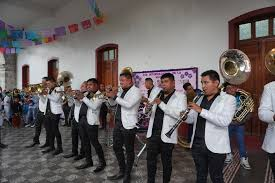
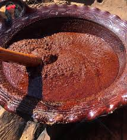
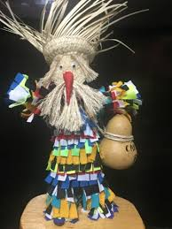
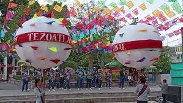

Identidad y orgullo Mixteco

🎶Nuestras bandas de viento y los sones tradicionales son el alma de cada celebración en el pueblo. Representan nuestra historia oral y la alegría de la Mixteca.

🥘El sabor único del mole mixteco y nuestras tortillas hechas a mano con maíz de la región. Una herencia culinaria que une a las familias.

🏺El arte de tejer la palma y trabajar materiales locales. Cada pieza es elaborada por manos expertas que cuentan nuestra identidad.

🎭Celebraciones llenas de color, fe y la hermandad que caracteriza a nuestra gente. Son el punto donde todo el pueblo se reúne.